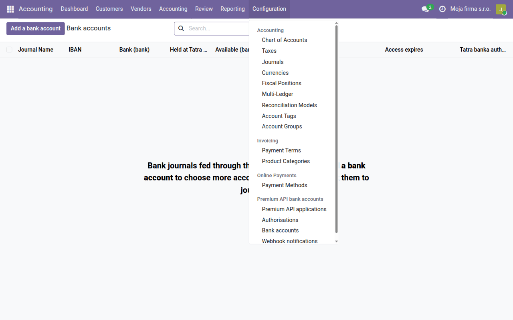
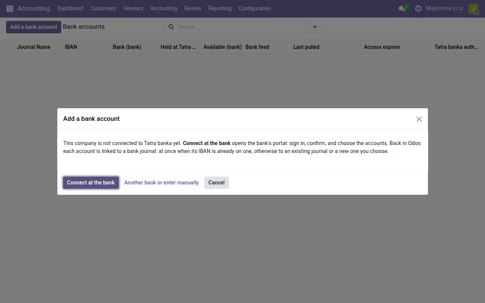
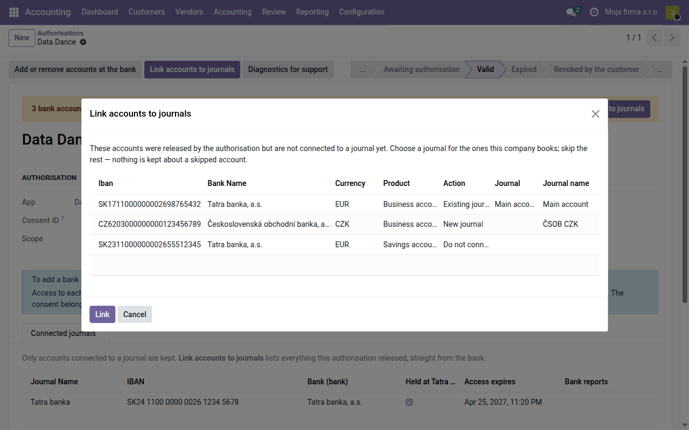
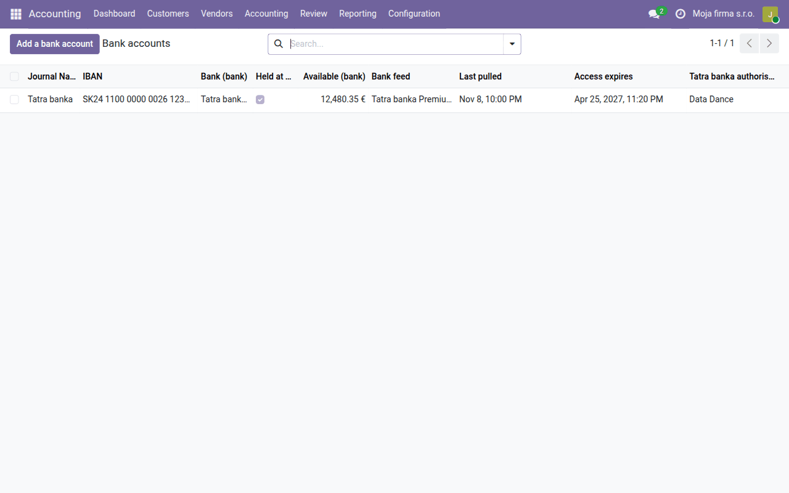
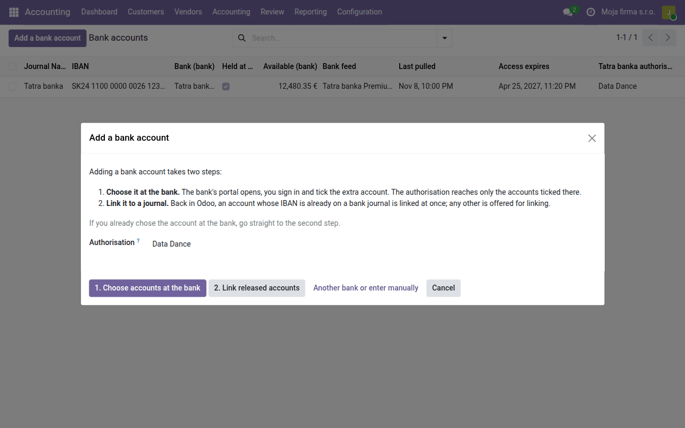
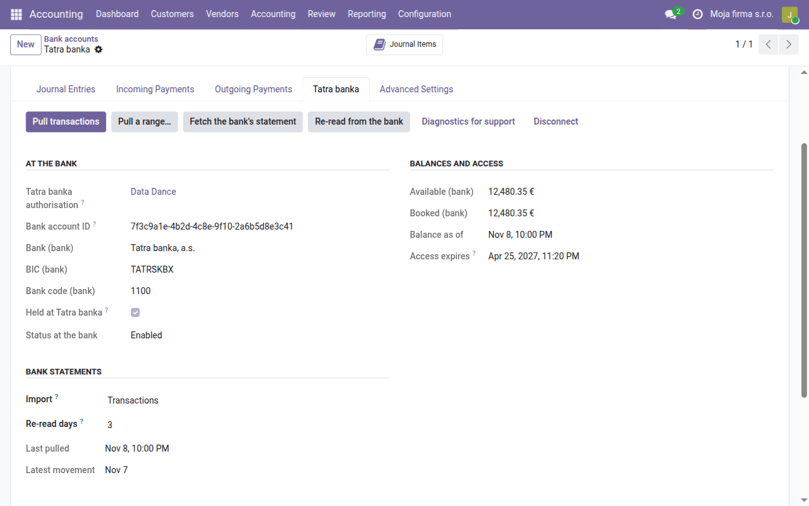

Task guide
Automatic bank statements
Movements on your accounts at Slovak and Czech banks arrive in Odoo by themselves every hour, through Tatra banka's Premium API. Only on the paid Data Dance hosting service.
| Country | Czech Republic and Slovakia |
|---|---|
| Edition | Odoo Community |
| Covers | account_tatrabanka (delivered separately), account_statement_tatrabanka (delivered separately), account_tatrabanka_webhook (delivered separately), l10n_cssk_payment_symbols, l10n_cssk_payment_symbols_oca |
Only on the paid Data Dance hosting service. Our team switches the connection on; it is not available outside the hosting service.
What this guide is for
With this connection a bank journal fills itself: every hour Odoo asks the bank for new movements and creates statement lines with the counterparty's name and account, the variable, constant and specific symbols and the message to the payee. Nothing is downloaded from internet banking or imported. The lines are then matched exactly as lines of an imported statement, as the Bank accounts guide describes.
Tatra banka's Premium API connects your accounts at Slovak and Czech banks, not only at Tatra banka.
Who can access what
- You give consent, at the bank itself. You log in to the bank's portal with your own credentials and choose which accounts to release. You never enter your internet banking credentials in Odoo or give them to us.
- Movements go from the bank straight to your Odoo. They do not pass through the Data Dance service, and it does not store them.
- We do not see your accounts. The Data Dance service only provides the connection to the bank. The access you grant is stored sealed, and without your Odoo we cannot reach your accounts or movements.
- You can withdraw the consent at any time, in Odoo or at the bank.
Connecting
Start in Accounting → Configuration → Premium API bank accounts → Bank accounts.

-
Click Add a bank account. While the company is not connected to the bank it offers a single button, Connect at the bank: the authorisation is created for you and the bank's portal opens at once. The bank setup button on the dashboard leads here too. An account at a bank the Premium API does not reach is entered with Another bank or enter manually.

-
On the bank's portal, a person with at least passive internet banking rights to the accounts logs in and selects the accounts to release. Finish within 30 minutes. Tatra banka's user manual (PDF, in Slovak) shows each screen of the portal.
-
Back in Odoo, a bank journal whose account number is exactly a released IBAN is connected by itself, and you land on the Bank accounts list. If an account has no journal yet, Odoo sends you to the authorisation instead: Link accounts to journals assigns it to an Existing journal, a New journal, or Do not connect, then click Link. Odoo proposes a choice for each account.


-
Open the connected journal and, on its Journal Entries tab, set Bank Feeds to Tatra banka Premium API. On its Tatra banka tab choose Import: Transactions, or Transactions + monthly statements (one statement per month, for example
TBSK 2026-10), and click Pull transactions.
From then on transactions are pulled every hour; Pull a range… fills in older ones (15 months back for accounts at Tatra banka, 13 for accounts at other banks). Only booked movements are imported.
Another bank account
An authorisation reaches only the accounts ticked at the bank. Add another on the same Bank accounts list with Add a bank account: 1. Choose accounts at the bank opens the bank's portal, where you tick the account, and 2. Link released accounts assigns it to a journal when you are back.

The consent lasts 180 days and belongs to the person who gave it. Two weeks before it ends the authorisation gets an activity saying access to Tatra banka expires; renew it with Add or remove accounts at the bank on the authorisation (Premium API bank accounts → Authorisations), and the journals stay connected. If the person who gave consent is leaving, have someone else authorise before they go.
Checking
- The Bank accounts list shows each account's available balance, Last pulled and when access expires.
-
The journal's Tatra banka tab shows Last pulled and Latest movement under Bank statements.

-
A failed pull is written to the journal's history with the bank's reason; the other journals are pulled regardless.
- At month end compare the closing balance in Odoo with the balance on the bank's statement, as in the Bank accounts guide — the balances of monthly statements are computed from their lines, not taken from the bank.
Posting and matching the lines does not change: the Bank accounts guide describes them.